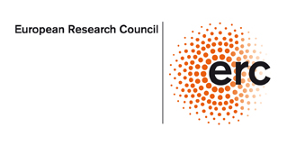
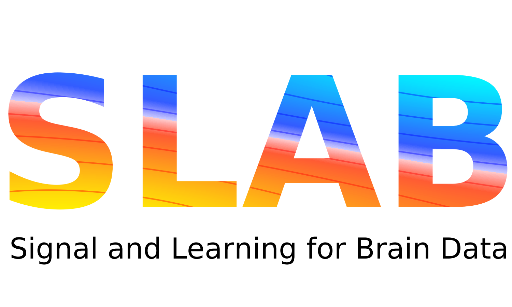

ERC Starting Grant:
Signal and Learning Applied to Brain data (SLAB)
 
Summary: Understanding how the brain works in healthy and pathological conditions is considered as one of the challenges for the 21st century. After the first electroencephalography (EEG) measurements in 1929, the 90’s was the birth of modern functional brain imaging with the first functional MRI (fMRI) and full head magnetoencephalography (MEG) system. By offering noninvasively unique insights into the living brain, imaging has revolutionized in the last twenty years both clinical and cognitive neuroscience. After pioneering breakthroughs in physics and engineering, the field of neuroscience has to face two major challenges. The size of the datasets keeps growing with ambitious projects such as the Human Connectome Project (HCP) which will release terabytes of data. The answers to current neuroscience questions are limited by the complexity of the observed signals: non-stationarity, high noise levels, heterogeneity of sensors, lack of accurate models for the signals. SLAB will provide the next generation of models and algorithms for mining electrophysiology signals which offer unique ways to image the brain at a millisecond time scale. SLAB will develop dedicated machine learning and statistical signal processing methods and favor the emergence of new challenges for these fields focussing on five open problems: 1) source localization with M/EEG for brain imaging at high temporal resolution 2) representation learning from multivariate (M/EEG) signals to boost statistical power and reduce acquisition costs 3) fusion of heterogeneous sensors to improve spatiotemporal resolution 4) modeling of non-stationary spectral interactions to identify functional coupling between neural ensembles 5) development of algorithms tractable on large datasets and easy to use by non-experts. SLAB aims to strengthen mathematical and computational foundations of neuroimaging data analysis. The methods developed will have applications across fields (e.g. computational biology, astronomy, econometrics). Yet, the primary users of the technologies developed will be in the cognitive and clinical neuroscience community. The tools and high quality open software produced in SLAB will facilitate the analysis of electrophysiology data, offering new perspectives to understand how the brain works at a mesoscale, and for clinical applications (epilepsy, autism, essential tremor, sleep disorders).
Publications related to the SLAB Project:
Shared Independent Component Analysis for Multi-Subject Neuroimaging
Richard H., Ablin P., Thirion B., Gramfort A., Hyvärinen A. (2021)
Advances in Neural Information Processing Systems 34 (NeurIPS)
 [www]
[BibTeX]
[www]
[BibTeX]
@inproceedings{richard-etal:21,
author = {Richard, Hugo and Ablin, Pierre and Thirion, Bertrand and Gramfort, Alexandre and Hyv{\"a}rinen, Aapo},
booktitle = {Advances in Neural Information Processing Systems 34 (NeurIPS)},
month = {December},
pdf = {https://arxiv.org/pdf/2110.13502.pdf},
title = {{Shared Independent Component Analysis for Multi-Subject Neuroimaging}},
url = {https://arxiv.org/abs/2110.13502},
year = {2021}
}
@misc{bertrand2021implicit,
archiveprefix = {arXiv},
author = {Bertrand, Quentin and Klopfenstein, Quentin and Massias, Mathurin and Blondel, Mathieu and Vaiter, Samuel and Gramfort, Alexandre and Salmon, Joseph},
eprint = {2105.01637},
primaryclass = {stat.ML},
title = {Implicit differentiation for fast hyperparameter selection in non-smooth convex learning},
url = {https://arxiv.org/abs/2105.01637},
year = {2021}
}
@article{ABLIN2021109144,
author = {Ablin, Pierre and Cardoso, Jean-Fran{\c c}ois and Gramfort, Alexandre},
doi = {https://doi.org/10.1016/j.jneumeth.2021.109144},
issn = {0165-0270},
journal = {Journal of Neuroscience Methods},
keywords = {ICA, EEG, MEG, Source separation},
pages = {109144},
title = {{Spectral Independent Component Analysis with noise modeling for M/EEG source separation}},
url = {https://www.sciencedirect.com/science/article/pii/S0165027021000790},
volume = {356},
year = {2021}
}
HNPE: Leveraging Global Parameters for Neural Posterior Estimation
Rodrigues P., Moreau T., Louppe G., Gramfort A. (2021)
Advances in Neural Information Processing Systems 34 (NeurIPS)
[www]
[BibTeX]
@inproceedings{Rodrigues2021,
author = {Rodrigues, Pedro L. C. and Moreau, Thomas and Louppe, Gilles and Gramfort, Alexandre},
booktitle = {Advances in Neural Information Processing Systems 34 (NeurIPS)},
month = {December},
pdf = {https://arxiv.org/pdf/2102.06477.pdf},
title = {{HNPE}: Leveraging Global Parameters for Neural Posterior Estimation},
url = {https://arxiv.org/abs/2102.06477},
year = {2021}
}
Electromagnetic neural source imaging under sparsity constraints with SURE-based hyperparameter tuning
Bannier P., Bertrand Q., Salmon J., Gramfort A. (2021)
Medical imaging meets NeurIPS 2021
[www]
[BibTeX]
@inproceedings{bannier:hal-03418092,
address = {Sydney, Australia},
author = {Bannier, Pierre-Antoine and Bertrand, Quentin and Salmon, Joseph and Gramfort, Alexandre},
booktitle = {{Medical imaging meets NeurIPS 2021}},
hal_id = {hal-03418092},
hal_version = {v1},
month = {December},
pdf = {https://hal.archives-ouvertes.fr/hal-03418092/file/submission_camera_ready.pdf},
title = {{Electromagnetic neural source imaging under sparsity constraints with SURE-based hyperparameter tuning}},
url = {https://hal.archives-ouvertes.fr/hal-03418092},
year = {2021}
}
@misc{klopfenstein2020,
archiveprefix = {arXiv},
author = {Klopfenstein, Quentin and Bertrand, Quentin and Gramfort, Alexandre and Salmon, Joseph and Vaiter, Samuel},
eprint = {2010.11825},
primaryclass = {stat.ML},
title = {Model identification and local linear convergence of coordinate descent},
url = {https://arxiv.org/abs/2010.11825},
year = {2020}
}
@inproceedings{richard-etal:20,
archiveprefix = {arXiv},
author = {Richard, Hugo and Gresele, Luigi and Hyv{\"a}rinen, Aapo and Thirion, Bertrand and Gramfort, Alexandre and Ablin, Pierre},
booktitle = {Advances in Neural Information Processing Systems 33 (NeurIPS)},
eprint = {2006.06635},
title = {Modeling Shared Responses in Neuroimaging Studies through MultiView {ICA}},
url = {https://arxiv.org/abs/2006.06635},
year = {2020}
}
@inproceedings{chevalier-etal:20,
archiveprefix = {arXiv},
author = {Chevalier, Jerome-Alexis and Salmon, Joseph and Gramfort, Alexandre and Thirion, Bertrand},
booktitle = {Advances in Neural Information Processing Systems 33 (NeurIPS)},
eprint = {2009.14310},
title = {Statistical control for spatio-temporal {MEG/EEG} source imaging with desparsified mutli-task Lasso},
url = {https://arxiv.org/abs/2009.14310},
year = {2020}
}
Spatio-temporal alignments: Optimal transport through space and time
Janati H., Cuturi M., Gramfort A. (2020)
AISTATS
[www]
[BibTeX]
@inproceedings{janati-etal:20a,
abstract = {Comparing data defined over space and time is notoriously hard. It involves quantifying both spatial and temporal variability while taking into account the chronological structure of the data. Dynamic Time Warping (DTW) computes a minimal cost alignment between time series that preserves the chronological order but is inherently blind to spatio-temporal shifts. In this paper, we propose Spatio-Temporal Alignments (STA), a new differentiable formulation of DTW that captures spatial and temporal variability. Spatial differences between time samples are captured using regularized Optimal transport. While temporal alignment cost exploits a smooth variant of DTW called soft-DTW. We show how smoothing DTW leads to alignment costs that increase quadratically with time shifts. The costs are expressed using an unbalanced Wasserstein distance to cope with observations that are not probabilities. Experiments on handwritten letters and brain imaging data confirm our theoretical findings and illustrate the effectiveness of STA as a dissimilarity for spatio-temporal data.},
address = {Online},
author = {Janati, Hicham and Cuturi, Marco and Gramfort, Alexandre},
booktitle = {AISTATS},
editor = {Silvia Chiappa and Roberto Calandra},
month = {26--28 Aug},
pages = {1695--1704},
pdf = {http://proceedings.mlr.press/v108/janati20a/janati20a.pdf},
publisher = {PMLR},
series = {Proceedings of Machine Learning Research},
title = {Spatio-temporal alignments: Optimal transport through space and time},
url = {http://proceedings.mlr.press/v108/janati20a.html},
volume = {108},
year = {2020}
}
Debiased Sinkhorn Barycenters
Janati H., Cuturi M., Gramfort A. (2020)
Proc. ICML 2020
[BibTeX]
@inproceedings{janati-etal:20b,
author = {Janati, Hicham and Cuturi, Marco and Gramfort, Alexandre},
booktitle = {Proc. ICML 2020},
month = {July},
pdf = {https://proceedings.icml.cc/static/paper_files/icml/2020/1584-Paper.pdf},
title = {Debiased Sinkhorn Barycenters},
year = {2020}
}
Implicit differentiation of Lasso-type models for hyperparameter optimization
Bertrand Q., Klopfenstein Q., Blondel M., Vaiter S., Gramfort A., Salmon J. (2020)
Proc. ICML 2020
[www]
[BibTeX]
@inproceedings{bertrand-etal:20,
author = {Bertrand, Quentin and Klopfenstein, Quentin and Blondel, Mathieu and Vaiter, Samuel and Gramfort, Alexandre and Salmon, Joseph},
booktitle = {Proc. ICML 2020},
month = {July},
pdf = {https://arxiv.org/pdf/2002.08943.pdf},
title = {Implicit differentiation of Lasso-type models for hyperparameter optimization},
url = {https://arxiv.org/abs/2002.08943},
year = {2020}
}
Support recovery and sup-norm convergence rates for sparse pivotal estimation
Massias M., Bertrand Q., Gramfort A., Salmon J. (2020)
International Conference on Artificial Intelligence and Statistics
[BibTeX]
@inproceedings{massias2020,
author = {Massias, Mathurin and Bertrand, Quentin and Gramfort, Alexandre and Salmon, Joseph},
booktitle = {International Conference on Artificial Intelligence and Statistics},
organization = {PMLR},
pages = {2655--2665},
pdf = {http://proceedings.mlr.press/v108/massias20a/massias20a.pdf},
title = {Support recovery and sup-norm convergence rates for sparse pivotal estimation},
year = {2020}
}
@article{engemann-etal:20,
abstract = {Electrophysiological methods, that is M/EEG, provide unique views into brain health. Yet, when building predictive models from brain data, it is often unclear how electrophysiology should be combined with other neuroimaging methods. Information can be redundant, useful common representations of multimodal data may not be obvious and multimodal data collection can be medically contraindicated, which reduces applicability. Here, we propose a multimodal model to robustly combine MEG, MRI and fMRI for prediction. We focus on age prediction as a surrogate biomarker in 674 subjects from the Cam-CAN dataset. Strikingly, MEG, fMRI and MRI showed additive effects supporting distinct brain-behavior associations. Moreover, the contribution of MEG was best explained by cortical power spectra between 8 and 30 Hz. Finally, we demonstrate that the model preserves benefits of stacking when some data is missing. The proposed framework, hence, enables multimodal learning for a wide range of biomarkers from diverse types of brain signals.},
author = {Engemann, Denis A and Kozynets, Oleh and Sabbagh, David and Lema{\^ i}tre, Guillaume and Varoquaux, Gael and Liem, Franziskus and Gramfort, Alexandre},
citation = {eLife 2020;9:e54055},
doi = {10.7554/eLife.54055},
issn = {2050-084X},
journal = {eLife},
keywords = {biomarker, aging, magnetic resonance imaging, magnetoencephalogrphy, oscillations, machine learning},
month = {may},
pages = {e54055},
pub_date = {2020-05-19},
publisher = {eLife Sciences Publications, Ltd},
title = {Combining magnetoencephalography with magnetic resonance imaging enhances learning of surrogate-biomarkers},
url = {https://doi.org/10.7554/eLife.54055},
volume = {9},
year = {2020}
}
@article{sabbagh-etal:20,
abstract = {Predicting biomedical outcomes from Magnetoencephalography and Electroencephalography (M/EEG) is central to applications like decoding, brain-computer-interfaces (BCI) or biomarker development and is facilitated by supervised machine learning. Yet, most of the literature is concerned with classification of outcomes defined at the event-level. Here, we focus on predicting continuous outcomes from M/EEG signal defined at the subject-level, and analyze about 600 MEG recordings from Cam-CAN dataset and about 1000 EEG recordings from TUH dataset. Considering different generative mechanisms for M/EEG signals and the biomedical outcome, we propose statistically-consistent predictive models that avoid source-reconstruction based on the covariance as representation. Our mathematical analysis and ground-truth simulations demonstrated that consistent function approximation can be obtained with supervised spatial filtering or by embedding with Riemannian geometry. Additional simulations revealed that Riemannian methods were more robust to model violations, in particular geometric distortions induced by individual anatomy. To estimate the relative contribution of brain dynamics and anatomy to prediction performance, we propose a novel model inspection procedure based on biophysical forward modeling. Applied to prediction of outcomes at the subject-level, the analysis revealed that the Riemannian model better exploited anatomical information while sensitivity to brain dynamics was similar across methods. We then probed the robustness of the models across different data cleaning options. Environmental denoising was globally important but Riemannian models were strikingly robust and continued performing well even without preprocessing. Our results suggest each method has its niche: supervised spatial filtering is practical for event-level prediction while the Riemannian model may enable simple end-to-end learning.},
author = {Sabbagh, David and Ablin, Pierre and Varoquaux, Ga{\"e}l and Gramfort, Alexandre and Engemann, Denis A.},
doi = {https://doi.org/10.1016/j.neuroimage.2020.116893},
issn = {1053-8119},
journal = {NeuroImage},
keywords = {MEG/EEG, Neuronal oscillations, Machine learning, Covariance, Spatial filters, Riemannian geometry},
pages = {116893},
title = {Predictive regression modeling with MEG/EEG: from source power to signals and cognitive states},
url = {http://www.sciencedirect.com/science/article/pii/S1053811920303797},
volume = {222},
year = {2020}
}
Multi-subject MEG/EEG source imaging with sparse multi-task regression
Janati H., Bazeille T., Thirion B., Cuturi M., Gramfort A. (2020)
NeuroImage
220: (116847).
[www]
[BibTeX]
@article{janati-etal:2020,
abstract = {Magnetoencephalography and electroencephalography (M/EEG) are non-invasive modalities that measure the weak electromagnetic fields generated by neural activity. Estimating the location and magnitude of the current sources that generated these electromagnetic fields is an inverse problem. Although it can be cast as a linear regression, this problem is severely ill-posed as the number of observations, which equals the number of sensors, is small. When considering a group study, a common approach consists in carrying out the regression tasks independently for each subject using techniques such as MNE or sLORETA. An alternative is to jointly localize sources for all subjects taken together, while enforcing some similarity between them. By pooling S subjects in a single joint regression, the number of observations is S times larger, potentially making the problem better posed and offering the ability to identify more sources with greater precision. Here we show how the coupling of the different regression problems can be done through a multi-task regularization that promotes focal source estimates. To take into account intersubject variabilities, we propose the Minimum Wasserstein Estimates (MWE). Thanks to a new joint regression method based on optimal transport (OT) metrics, MWE does not enforce perfect overlap of activation foci for all subjects but rather promotes spatial proximity on the cortical mantle. Besides, by estimating the noise level of each subject, MWE copes with the subject-specific signal-to-noise ratios with only one regularization parameter. On realistic simulations, MWE decreases the localization error by up to 4 mm per source compared to individual solutions. Experiments on the Cam-CAN dataset show improvements in spatial specificity in population imaging compared to individual models such as dSPM as well as a state-of-the-art Bayesian group level model. Our analysis of a multimodal dataset shows how multi-subject source localization reduces the gap between MEG and fMRI for brain mapping.},
author = {Janati, Hicham and Bazeille, Thomas and Thirion, Bertrand and Cuturi, Marco and Gramfort, Alexandre},
doi = {https://doi.org/10.1016/j.neuroimage.2020.116847},
issn = {1053-8119},
journal = {NeuroImage},
keywords = {Brain, Inverse modeling, EEG / MEG source imaging},
pages = {116847},
pdf = {https://arxiv.org/pdf/1910.01914.pdf},
title = {Multi-subject MEG/EEG source imaging with sparse multi-task regression},
url = {http://www.sciencedirect.com/science/article/pii/S1053811920303347},
volume = {220},
year = {2020}
}
@article{Moreau-etal:20,
author = {Moreau, Thomas and Gramfort, Alexandre},
doi = {10.1109/TPAMI.2020.3039215},
journal = {IEEE Transactions on Pattern Analysis and Machine Intelligence},
number = {},
pages = {1-1},
title = {{DiCoDiLe: Distributed Convolutional Dictionary Learning}},
volume = {},
year = {2020}
}
@article{appelhoff_mne-bids:2019,
author = {Appelhoff, Stefan and Sanderson, Matthew and Brooks, Teon and Vliet, Marijn van and Quentin, Romain and Holdgraf, Chris and Chaumon, Maximilien and Mikulan, Ezequiel and Tavabi, Kambiz and H{\"o}chenberger, Richard and Welke, Dominik and Brunner, Clemens and Rockhill, Alexander and Larson, Eric and Gramfort, Alexandre and Jas, Mainak},
comment = {[Code]},
doi = {10.21105/joss.01896},
issn = {2475-9066},
journal = {Journal of Open Source Software},
language = {en},
month = {December},
number = {44},
pages = {1896},
shorttitle = {{MNE}-{BIDS}},
title = {{MNE}-{BIDS}: {Organizing} electrophysiological data into
the {BIDS} format and facilitating their analysis},
url = {https://joss.theoj.org/papers/10.21105/joss.01896},
urldate = {2019-12-19},
volume = {4},
year = {2019}
}
@inproceedings{sabbagh-etal:2019,
author = {Sabbagh, David and Ablin, Pierre and Varoquaux, Gael and Gramfort, Alexandre and Engemann, Denis A.},
booktitle = {Advances in Neural Information Processing Systems 32},
comment = {[Code]},
editor = {H. Wallach and H. Larochelle and A. Beygelzimer and F. d\textquotesingle Alch{\' e}-Buc and E. Fox and R. Garnett},
pages = {7321--7332},
publisher = {Curran Associates, Inc.},
title = {Manifold-regression to predict from MEG/EEG brain signals without source modeling},
url = {http://papers.nips.cc/paper/8952-manifold-regression-to-predict-from-megeeg-brain-signals-without-source-modeling.pdf},
year = {2019}
}
@inproceedings{ablin:hal-02140383,
author = {Ablin, Pierre and Moreau, Thomas and Massias, Mathurin and Gramfort, Alexandre},
booktitle = {Advances in Neural Information Processing Systems 32},
editor = {H. Wallach and H. Larochelle and A. Beygelzimer and F. d\textquotesingle Alch{\' e}-Buc and E. Fox and R. Garnett},
pages = {13100--13110},
publisher = {Curran Associates, Inc.},
title = {Learning step sizes for unfolded sparse coding},
url = {http://papers.nips.cc/paper/9469-learning-step-sizes-for-unfolded-sparse-coding.pdf},
year = {2019}
}
Dual Extrapolation for Sparse Generalized Linear Models
Massias M., Vaiter S., Gramfort A., Salmon J. (2019)
Journal of Machine Learning Research
.
[www]
[Code]
[BibTeX]
@article{massias:hal-02263500,
author = {Massias, Mathurin and Vaiter, Samuel and Gramfort, Alexandre and Salmon, Joseph},
comment = {[Code]},
hal_id = {hal-02263500},
hal_version = {v1},
journal = {Journal of Machine Learning Research},
month = {August},
pdf = {https://hal.archives-ouvertes.fr/hal-02263500/file/main.pdf},
title = {{Dual Extrapolation for Sparse Generalized Linear Models}},
url = {https://hal.archives-ouvertes.fr/hal-02263500},
year = {2019}
}
@inproceedings{bertrand-etal:19,
author = {Bertrand, Quentin and Massias, Mathurin and Gramfort, Alexandre and Salmon, Joseph},
booktitle = {Advances in Neural Information Processing Systems 32},
editor = {H. Wallach and H. Larochelle and A. Beygelzimer and F. d\textquotesingle Alch{\' e}-Buc and E. Fox and R. Garnett},
pages = {3961--3972},
publisher = {Curran Associates, Inc.},
title = {Handling correlated and repeated measurements with the smoothed multivariate square-root Lasso},
url = {http://papers.nips.cc/paper/8651-handling-correlated-and-repeated-measurements-with-the-smoothed-multivariate-square-root-lasso.pdf},
year = {2019}
}
Group Level MEG/EEG Source Imaging via Optimal Transport: Minimum Wasserstein Estimates
Janati H., Bazeille T., Thirion B., Cuturi M., Gramfort A. (2019)
Information Processing in Medical Imaging
[BibTeX]
@inproceedings{janati-etal:2019b,
address = {Cham},
author = {Janati, H. and Bazeille, T. and Thirion, B. and Cuturi, M. and Gramfort, A.},
booktitle = {Information Processing in Medical Imaging},
editor = {Chung, Albert C. S.
and Gee, James C.
and Yushkevich, Paul A.
and Bao, Siqi},
isbn = {978-3-030-20351-1},
pages = {743--754},
pdf = {https://arxiv.org/pdf/1902.04812.pdf},
publisher = {Springer International Publishing},
title = {Group Level MEG/EEG Source Imaging via Optimal Transport: Minimum Wasserstein Estimates},
year = {2019}
}
Beyond Pham's algorithm for joint diagonalization
Ablin P., Cardoso J., Gramfort A. (2019)
European Symposium on Artificial Neural Networks, Computational Intelligence and Machine Learning (ESANN)
[www]
[Code]
[BibTeX]
@inproceedings{ablin-etal:18c,
author = {Ablin, Pierre A and Cardoso, Jean-Fran{\c c}ois and Gramfort, Alexandre},
booktitle = {European Symposium on Artificial Neural Networks, Computational Intelligence and Machine Learning (ESANN)},
comment = {[Code]},
month = {April},
pdf = {https://hal.archives-ouvertes.fr/hal-01936887/file/main.pdf},
title = {{Beyond Pham's algorithm for joint diagonalization}},
url = {https://hal.archives-ouvertes.fr/hal-01936887},
year = {2019}
}
A Quasi-Newton algorithm on the orthogonal manifold for NMF with transform learning
Ablin P., Fagot D., Wendt H., Gramfort A., Fevotte C. (2019)
ICASSP 2019 - 2019 IEEE International Conference on Acoustics, Speech and Signal Processing (ICASSP)
[www]
[Code]
[BibTeX]
@inproceedings{ablin-etal:18b,
author = {Ablin, P. and Fagot, D. and Wendt, H. and Gramfort, A. and Fevotte, C.},
booktitle = {ICASSP 2019 - 2019 IEEE International Conference on Acoustics, Speech and Signal Processing (ICASSP)},
comment = {[Code]},
doi = {10.1109/ICASSP.2019.8683291},
issn = {2379-190X},
keywords = {Nonnegative matrix factorization (NMF);transform learning;source separation;non-convex optimization;manifolds;audio signal processing},
month = {May},
number = {},
pages = {700-704},
pdf = {https://arxiv.org/pdf/1811.02225.pdf},
title = {{A Quasi-Newton algorithm on the orthogonal manifold for NMF with transform learning}},
url = {https://arxiv.org/abs/1811.02225},
volume = {},
year = {2019}
}
Stochastic algorithms with descent guarantees for ICA
Ablin P., Gramfort A., Cardoso J., Bach F. (2019)
AISTATS
[www]
[Code]
[BibTeX]
@inproceedings{Ablin-etal:19a,
address = {},
author = {Ablin, Pierre and Gramfort, Alexandre and Cardoso, Jean-Fran\c{c}ois and Bach, Francis},
booktitle = {AISTATS},
comment = {[Code]},
editor = {Chaudhuri, Kamalika and Sugiyama, Masashi},
month = {16--18 Apr},
pages = {1564--1573},
pdf = {http://proceedings.mlr.press/v89/ablin19a/ablin19a.pdf},
publisher = {PMLR},
series = {Proceedings of Machine Learning Research},
title = {Stochastic algorithms with descent guarantees for ICA},
url = {http://proceedings.mlr.press/v89/ablin19a.html},
volume = {89},
year = {2019}
}
@inproceedings{dupre-etal:18,
author = {Dupr{\' e} la Tour, Tom and Moreau, Thomas and Jas, Mainak and Gramfort, Alexandre},
booktitle = {Advances in Neural Information Processing Systems 31},
comment = {[Code]},
editor = {S. Bengio and H. Wallach and H. Larochelle and K. Grauman and N. Cesa-Bianchi and R. Garnett},
pages = {3292--3302},
publisher = {Curran Associates, Inc.},
title = {Multivariate Convolutional Sparse Coding for Electromagnetic Brain Signals},
url = {http://papers.nips.cc/paper/7590-multivariate-convolutional-sparse-coding-for-electromagnetic-brain-signals.pdf},
year = {2018}
}
Wasserstein regularization for sparse multi-task regression
Janati H., Cuturi M., Gramfort A. (2019)
AISTATS
[www]
[BibTeX]
@inproceedings{janati-etal:19,
address = {},
author = {Janati, Hicham and Cuturi, Marco and Gramfort, Alexandre},
booktitle = {AISTATS},
editor = {Chaudhuri, Kamalika and Sugiyama, Masashi},
month = {16--18 Apr},
pages = {1407--1416},
pdf = {http://proceedings.mlr.press/v89/janati19a/janati19a.pdf},
publisher = {PMLR},
series = {Proceedings of Machine Learning Research},
title = {Wasserstein regularization for sparse multi-task regression},
url = {http://proceedings.mlr.press/v89/janati19a.html},
volume = {89},
year = {2019}
}
@article{jas-etal:18,
author = {Jas, Mainak and Larson, Eric and Engemann, Denis A. and Lepp{\"a}kangas, Jaakko and Taulu, Samu and H{\"a}m{\"a}l{\"a}inen, Matti and Gramfort, Alexandre},
comment = {[Code]},
doi = {10.3389/fnins.2018.00530},
issn = {1662-453X},
journal = {Frontiers in Neuroscience},
pages = {530},
title = {A Reproducible {MEG/EEG} Group Study With the MNE Software: Recommendations, Quality Assessments, and Good Practices},
url = {https://www.frontiersin.org/article/10.3389/fnins.2018.00530},
volume = {12},
year = {2018}
}
Celer: a Fast Solver for the Lasso with Dual Extrapolation
Massias M., Gramfort A., Salmon J. (2018)
Proceedings of the 35th International Conference on Machine Learning
[www]
[Code]
[BibTeX]
@inproceedings{Massias_Gramfort_Salmon18,
author = {Massias, M. and Gramfort, A. and Salmon, J.},
booktitle = {Proceedings of the 35th International Conference on Machine Learning},
comment = {[Code]},
pages = {3321--3330},
pdf = {https://arxiv.org/pdf/1802.07481},
title = {Celer: a Fast Solver for the Lasso with Dual Extrapolation},
url = {https://arxiv.org/abs/1802.07481},
volume = {80},
year = {2018}
}
Faster independent component analysis by preconditioning with Hessian approximations
Ablin P., Cardoso J., Gramfort A. (2018)
IEEE Transactions on Signal Processing
66: (4040-4049).
[Code]
[BibTeX]
@article{ablin-etal:2017,
author = {Ablin, Pierre and Cardoso, Jean-Francois and Gramfort, Alexandre},
comment = {[Code]},
doi = {10.1109/TSP.2018.2844203},
issn = {1053-587X},
journal = {IEEE Transactions on Signal Processing},
keywords = {Approximation algorithms;Brain modeling;Data models;Electronic mail;Neuroscience;Signal processing algorithms;Tensile stress;Blind source separation;Independent Component Analysis;maximum likelihood estimation;preconditioning;quasi-Newton methods;second order methods},
month = {},
number = {15},
pages = {4040-4049},
pdf = {https://hal.inria.fr/hal-01552340/file/quasi-newton-methods%20%286%29.pdf},
title = {Faster independent component analysis by preconditioning with Hessian approximations},
volume = {66},
year = {2018}
}
A hierarchical Bayesian perspective on majorization-minimization for non-convex sparse regression: application to M/EEG source imaging
Bekhti Y., Lucka F., Salmon J., Gramfort A. (2018)
Inverse Problems
.
[www]
[Code]
[BibTeX]
@article{bekhti-etal:17,
author = {Bekhti, Yousra and Lucka, Felix and Salmon, Joseph and Gramfort, Alexandre},
comment = {[Code]},
journal = {Inverse Problems},
pdf = {https://arxiv.org/pdf/1710.08747},
title = {A hierarchical Bayesian perspective on majorization-minimization for non-convex sparse regression: application to M/EEG source imaging},
url = {http://iopscience.iop.org/article/10.1088/1361-6420/aac9b3/meta},
year = {2018}
}
Accelerating Likelihood Optimization for ICA on Real Signals
Ablin P., Cardoso J., Gramfort A. (2018)
Latent Variable Analysis and Signal Separation (LVA-ICA)
[Code]
[BibTeX]
@inproceedings{ablin-etal:2018b,
address = {Cham},
author = {Ablin, Pierre and Cardoso, Jean-Fran{\c{c}}ois and Gramfort, Alexandre},
booktitle = {Latent Variable Analysis and Signal Separation (LVA-ICA)},
comment = {[Code]},
editor = {Deville, Yannick and Gannot, Sharon and Mason, Russell and Plumbley, Mark D. and Ward, Dominic},
isbn = {978-3-319-93764-9},
pages = {151--160},
pdf = {https://hal.inria.fr/hal-01822602/document},
publisher = {Springer International Publishing},
title = {Accelerating Likelihood Optimization for ICA on Real Signals},
year = {2018}
}
Faster ICA under orthogonal constraint
Ablin P., Cardoso J., Gramfort A. (2018)
International Conference on Acoustics, Speech, and Signal Processing (ICASSP)
[Code]
[BibTeX]
@inproceedings{ablin-etal:2018a,
address = {Calgary, Canada},
author = {Ablin, Pierre and Cardoso, Jean-Francois and Gramfort, Alexandre},
booktitle = {International Conference on Acoustics, Speech, and Signal Processing (ICASSP)},
comment = {[Code]},
month = {April},
pdf = {https://arxiv.org/pdf/1711.10873},
title = {{Faster ICA under orthogonal constraint}},
year = {2018}
}
Driver estimation in non-linear autoregressive models
Dupré la Tour T., Grenier Y., Gramfort A. (2018)
International Conference on Acoustics, Speech, and Signal Processing (ICASSP)
[www]
[BibTeX]
@inproceedings{duprelatour-etal:18,
address = {Calgary, Canada},
author = {Dupr{\'e} la Tour, Tom and Grenier, Yves and Gramfort, Alexandre},
booktitle = {International Conference on Acoustics, Speech, and Signal Processing (ICASSP)},
hal_id = {hal-01696786},
hal_version = {v1},
keywords = {cross-frequency coupling ; non-linear autoregressive models ; spectrum estimation ; electrophysiology},
month = {April},
pdf = {https://hal.archives-ouvertes.fr/hal-01696786/file/duprelatour2018icassp.pdf},
title = {{Driver estimation in non-linear autoregressive models}},
url = {https://hal.archives-ouvertes.fr/hal-01696786},
year = {2018}
}
Gap Safe Screening Rules for Sparsity Enforcing Penalties
Ndiaye E., Fercoq O., Gramfort A., Salmon J. (2017)
Journal of Machine Learning Research
18: (1-33).
[www]
[BibTeX]
@article{ndiaye-etal:17b,
author = {Ndiaye, Eugene and Fercoq, Olivier and Gramfort, Alexandre and Salmon, Joseph},
journal = {Journal of Machine Learning Research},
number = {128},
pages = {1-33},
pdf = {http://jmlr.org/papers/volume18/16-577/16-577.pdf},
title = {Gap Safe Screening Rules for Sparsity Enforcing Penalties},
url = {http://jmlr.org/papers/v18/16-577.html},
volume = {18},
year = {2017}
}
Efficient Smoothed Concomitant Lasso Estimation for High Dimensional Regression
Ndiaye E., Fercoq O., Gramfort A., Leclère V., Salmon J. (2017)
Journal of Physics: Conference Series
904: (012006).
[www]
[BibTeX]
@article{ndiaye-etal:17,
abstract = {In high dimensional settings, sparse structures are crucial for efficiency, both in term of memory, computation and performance. It is customary to consider ℓ 1 penalty to enforce sparsity in such scenarios. Sparsity enforcing methods, the Lasso being a canonical example, are popular candidates to address high dimension. For efficiency, they rely on tuning a parameter trading data fitting versus sparsity. For the Lasso theory to hold this tuning parameter should be proportional to the noise level, yet the latter is often unknown in practice. A possible remedy is to jointly optimize over the regression parameter as well as over the noise level. This has been considered under several names in the literature: Scaled-Lasso, Square-root Lasso, Concomitant Lasso estimation for instance, and could be of interest for uncertainty quantification. In this work, after illustrating numerical difficulties for the Concomitant Lasso formulation, we propose a modification we coined Smoothed Concomitant Lasso, aimed at increasing numerical stability. We propose an efficient and accurate solver leading to a computational cost no more expensive than the one for the Lasso. We leverage on standard ingredients behind the success of fast Lasso solvers: a coordinate descent algorithm, combined with safe screening rules to achieve speed efficiency, by eliminating early irrelevant features.},
author = {Ndiaye, Eug{\`e}ne and Fercoq, Olivier and Gramfort, Alexandre and Lecl{\`e}re, Vincent and Salmon, Joseph},
journal = {Journal of Physics: Conference Series},
number = {1},
pages = {012006},
pdf = {https://arxiv.org/pdf/1606.02702},
title = {Efficient Smoothed Concomitant Lasso Estimation for High Dimensional Regression},
url = {http://stacks.iop.org/1742-6596/904/i=1/a=012006},
volume = {904},
year = {2017}
}
Hyperparameter estimation in maximum a posteriori regression using group sparsity with an application to brain imaging
Bekhti Y., Badeau R., Gramfort A. (2017)
2017 25th European Signal Processing Conference (EUSIPCO)
[BibTeX]
@inproceedings{bekhti-etal:17a,
author = {Bekhti, Yousra and Badeau, Roland and Gramfort, Alexandre},
booktitle = {2017 25th European Signal Processing Conference (EUSIPCO)},
doi = {10.23919/EUSIPCO.2017.8081206},
issn = {},
keywords = {Bayes methods;brain;convex programming;electroencephalography;inverse problems;iterative methods;maximum likelihood estimation;medical image processing;regression analysis;Bayesian inference;brain activations;brain imaging;faster algorithms;high-dimensional sparse synthesis models;hyperparameter estimation;inverse problem;nonconvex penalty;posteriori regression;recurrent problem;sparse regression models;Bayes methods;Brain modeling;Estimation;Europe;Inverse problems;Sensors;Signal processing},
month = {Aug},
number = {},
pages = {246-250},
pdf = {https://hal.archives-ouvertes.fr/hal-01531238/document},
title = {Hyperparameter estimation in maximum a posteriori regression using group sparsity with an application to brain imaging},
volume = {},
year = {2017}
}
MEG-BIDS, the brain imaging data structure extended to magnetoencephalography
Niso G., Gorgolewski K., Bock E., Brooks T., Flandin G., Gramfort A., Henson R., Jas M., Litvak V., T. Moreau J., Oostenveld R., Schoffelen J., Tadel F., Wexler J., Baillet S. (2018)
Scientific Data
5: ().
[www]
[BibTeX]
@article{NisoGalan-etal:18,
author = {Niso, Guiomar and Gorgolewski, Krzysztof J. and Bock, Elizabeth and Brooks, Teon L. and Flandin, Guillaume and Gramfort, Alexandre and Henson, Richard N. and Jas, Mainak and Litvak, Vladimir and T. Moreau, Jeremy and Oostenveld, Robert and Schoffelen, Jan-Mathijs and Tadel, Francois and Wexler, Joseph and Baillet, Sylvain},
day = {19},
journal = {Scientific Data},
month = {06},
pdf = {https://www.biorxiv.org/content/early/2017/08/08/172684.full.pdf},
title = {MEG-BIDS, the brain imaging data structure extended to magnetoencephalography},
url = {http://dx.doi.org/10.1038/sdata.2018.110},
volume = {5},
year = {2018}
}
Autoreject: Automated artifact rejection for MEG and EEG data
Jas M., Engemann D., Bekhti Y., Raimondo F., Gramfort A. (2017)
NeuroImage
159: (417 - 429).
[www]
[Code]
[BibTeX]
@article{jas-etal:17b,
author = {Jas, Mainak and Engemann, Denis A. and Bekhti, Yousra and Raimondo, Federico and Gramfort, Alexandre},
comment = {[Code]},
doi = {https://doi.org/10.1016/j.neuroimage.2017.06.030},
issn = {1053-8119},
journal = {NeuroImage},
pages = {417 - 429},
pdf = {https://arxiv.org/pdf/1612.08194.pdf},
title = {Autoreject: Automated artifact rejection for MEG and EEG data},
url = {http://www.sciencedirect.com/science/article/pii/S1053811917305013},
volume = {159},
year = {2017}
}
Generalized Concomitant Multi-Task Lasso for Sparse Multimodal Regression
Massias M., Fercoq O., Gramfort A., Salmon J. (2018)
AISTATS
[BibTeX]
@inproceedings{massias-etal:2017,
author = {Massias, Mathurin and Fercoq, Olivier and Gramfort, Alexandre and Salmon, Joseph},
booktitle = {AISTATS},
pages = {998--1007},
pdf = {http://proceedings.mlr.press/v84/massias18a/massias18a.pdf},
series = {Proceedings of Machine Learning Research},
title = {Generalized Concomitant Multi-Task Lasso for Sparse Multimodal Regression},
volume = {84},
year = {2018}
}
Learning the Morphology of Brain Signals Using Alpha-Stable Convolutional Sparse Coding
Jas M., Dupré la Tour T., Simsekli U., Gramfort A. (2017)
Advances in Neural Information Processing Systems (NIPS) 30
[Code]
[BibTeX]
@inproceedings{jas-etal:2017,
author = {Jas, Mainak and Dupr{\' e} la Tour, Tom and Simsekli, Umut and Gramfort, Alexandre},
booktitle = {Advances in Neural Information Processing Systems (NIPS) 30},
comment = {[Code]},
editor = {I. Guyon and U. V. Luxburg and S. Bengio and H. Wallach and R. Fergus and S. Vishwanathan and R. Garnett},
pages = {1099--1108},
pdf = {http://papers.nips.cc/paper/6710-learning-the-morphology-of-brain-signals-using-alpha-stable-convolutional-sparse-coding.pdf},
publisher = {Curran Associates, Inc.},
title = {Learning the Morphology of Brain Signals Using Alpha-Stable Convolutional Sparse Coding},
year = {2017}
}
Parametric estimation of spectrum driven by an exogenous signal
Dupre la Tour T., Grenier Y., Gramfort A. (2017)
International Conference on Acoustics, Speech, and Signal Processing (ICASSP)
[www]
[BibTeX]
@inproceedings{dupre-etal:2017,
address = {New Orleans, USA},
author = {Dupre la Tour, Tom and Grenier, Yves and Gramfort, Alexandre},
booktitle = {International Conference on Acoustics, Speech, and Signal Processing (ICASSP)},
month = {February},
pdf = {https://hal.archives-ouvertes.fr/hal-01448603/document},
title = {{Parametric estimation of spectrum driven by an exogenous signal}},
url = {https://hal.archives-ouvertes.fr/hal-01448603/},
year = {2017}
}
Caveats with stochastic gradient and maximum likelihood based ICA for EEG
Montoya-Martinez J., Cardoso J., Gramfort A. (2017)
International Conference on Latent Variable Analysis, Independent Component Analysis LVA-ICA
[www]
[BibTeX]
@inproceedings{montoya-etal:2017,
address = {Grenoble, France},
author = {Montoya-Martinez, Jair and Cardoso, Jean-Fran{\c c}ois and Gramfort, Alexandre},
booktitle = {International Conference on Latent Variable Analysis, Independent Component Analysis LVA-ICA},
month = {February},
pdf = {https://hal.archives-ouvertes.fr/hal-01451432/document},
title = {{Caveats with stochastic gradient and maximum likelihood based ICA for EEG}},
url = {https://hal.archives-ouvertes.fr/hal-01451432/},
year = {2017}
}
GAP Safe Screening Rules for Sparse-Group Lasso
Ndiaye E., Fercoq O., Gramfort A., Salmon J. (2016)
Proc. NIPS 2016
[BibTeX]
@inproceedings{ndiaye-etal:16b,
author = {Ndiaye, Eug{\`e}ne and Fercoq, Olivier and Gramfort, Alexandre and Salmon, J.},
booktitle = {Proc. NIPS 2016},
pdf = {http://arxiv.org/pdf/1602.06225v1.pdf},
title = {{GAP} Safe Screening Rules for {Sparse-Group Lasso}},
year = {2016}
}
Efficient Smoothed Concomitant Lasso Estimation for High Dimensional Regression
Ndiaye E., Fercoq O., Gramfort A., Leclère V., Salmon J. (2017)
Journal of Physics: Conference Series
904: (012006).
[www]
[BibTeX]
@article{ndiaye-etal:16a,
abstract = {In high dimensional settings, sparse structures are crucial for efficiency, both in term of memory, computation and performance. It is customary to consider ℓ 1 penalty to enforce sparsity in such scenarios. Sparsity enforcing methods, the Lasso being a canonical example, are popular candidates to address high dimension. For efficiency, they rely on tuning a parameter trading data fitting versus sparsity. For the Lasso theory to hold this tuning parameter should be proportional to the noise level, yet the latter is often unknown in practice. A possible remedy is to jointly optimize over the regression parameter as well as over the noise level. This has been considered under several names in the literature: Scaled-Lasso, Square-root Lasso, Concomitant Lasso estimation for instance, and could be of interest for uncertainty quantification. In this work, after illustrating numerical difficulties for the Concomitant Lasso formulation, we propose a modification we coined Smoothed Concomitant Lasso, aimed at increasing numerical stability. We propose an efficient and accurate solver leading to a computational cost no more expensive than the one for the Lasso. We leverage on standard ingredients behind the success of fast Lasso solvers: a coordinate descent algorithm, combined with safe screening rules to achieve speed efficiency, by eliminating early irrelevant features.},
author = {Ndiaye, Eug{\`e}ne and Fercoq, Olivier and Gramfort, Alexandre and Lecl{\`e}re, Vincent and Salmon, J.},
journal = {Journal of Physics: Conference Series},
number = {1},
pages = {012006},
pdf = {https://arxiv.org/pdf/1606.02702v1.pdf},
title = {Efficient Smoothed Concomitant Lasso Estimation for High Dimensional Regression},
url = {http://stacks.iop.org/1742-6596/904/i=1/a=012006},
volume = {904},
year = {2017}
}